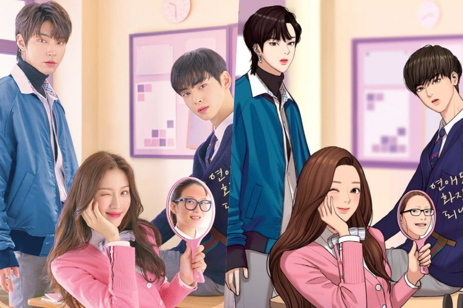
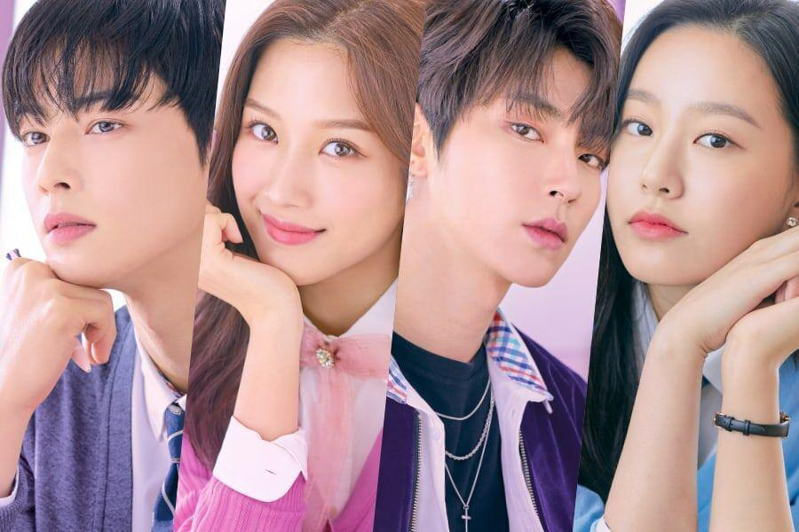

TRUE BEAUTY
Serie y comic de webtoon
 Lim Ju-gyeong es una estudiante de secundaria, una tímida fanática del cómic que después de ver videos de belleza en Internet logra dominar el arte del maquillaje se hace muy popular en la escuela cuando su canal de maquillaje de YouTube se convierte en un éxito repentino. Se convertirá en chica más bonita de su escuela, literalmente, de la noche a la mañana. Lee Su Ho es el único que ha visto su rostro sin maquillaje. Él no solo es uno de los mejores estudiantes, sino que también llama la atención de todas las chicas que lo rodean. A pesar de su popularidad, Lee Su Ho tiene un lado tímido. Por otro lado, están Han Seo Jun, un chico alto y atractivo, y Kang Su Jin, una diosa en toda regla, al menos físicamente hablando.
True Beauty es el dorama coreano que ha tomado al 2021 por sorpresa. La serie se ha convertido en un éxito a nivel internacional, pese a que no se encuentra en plataformas como Netflix. La serie protagonizada por Cha Eun-Woo (del grupo de k-pop ASTRO), Moon Ga-young, y Hwang In-Yeop, cuenta la historia de una joven coreana que es burla de su familia y sus compañeros de escuela debido a que no es considerada bella. True Beauty está basada en un webtoon del mismo nombre.